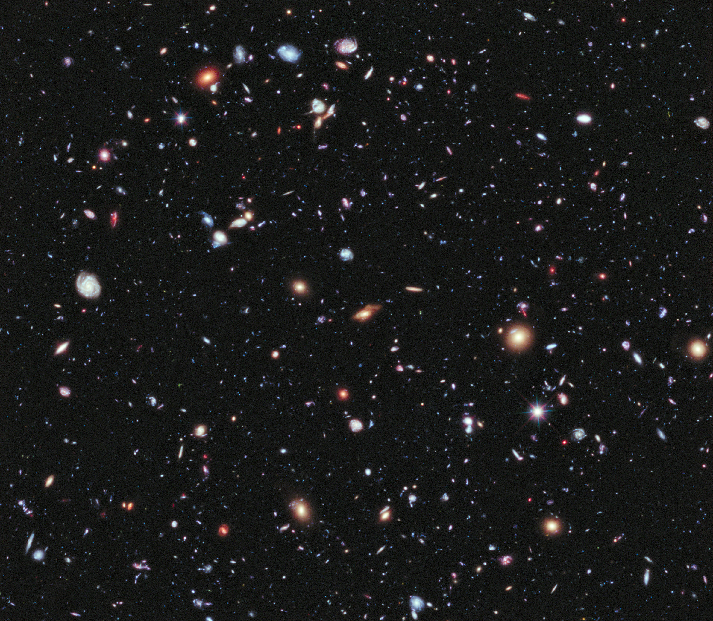

James Webb - O Telescópio que promete alavancar a Astronomia.
É um projeto ambicioso, um telescópio com área de superfície combinada de 25m², cerca de 5x o espelho do hubble. Teve seu início oficialmente em 1996 e com lançamento previsto para 2007, sendo continuamente adiada. Em 25 de dezembro de 2021, tornou real o novo salto da humanidade.

Quem foi James Webb?
James Edwin Webb (7 de outubro de 1906 - 21 de março de 1992) foi um militar, servidor público e político dos Estados Unidos, nomeado o segundo administrador da NASA em 1961, durante o Governo do John F. Kennedy com sua meta de pouso lunar tripulado até 1968. Sua presença foi de suma importância para conquistar apoio e recursos contínuos para o programa Apollo. O telescópio que agora leva seu nome, honra sua grandeza para os novos dias que virão para os amantes do céu.
Ele conta com 18 segmentos hexagonais feitos de berílho banhado a ouro, combinando-se, formam o espelho de 6.5 metros de altura, o maior que já existiu no espaço. Sua captação é por meio do espectro infravermelho, extremamente sensível, que torna imprescindível a sua orbita a distâncias consideráveis da terra e da lua para que não sofra interferências de calor. Sendo esta a grande diferença do seu predescessor o Hubble ( lançado em 1990 ), que capta imagens no espectro de luz visível e ultravioleta. Em função, James Webb pode ser comparado com o telescópio Spitzer, também em órbita, mas este contando com apenas 85cm de diâmetro de espelho.
Além da distância da Terra, o James webb conta com um escudo solar, permitindo que seus instrumentos científicos permaneçam a -220 °C.
Suas contribuições para a Ciência
Com um telescópio tão grande, a ciência poderá olhar para atrás do tempo já mapeado e avançar em dados sobre o início do universo, com idade de apenas algumas centenas de milhões de anos após o Big Bang. Isso nos dará uma visão sobre a formação do universo como nunca antes, não se resumindo apenas a corpos de grandes massas, mas também estará apto a observar estrelas indivíduais e até tentará observar exoplanetas, com o intuito de captar dados sobre sua composição, através do espectro de luz refletido enquanto a estrela mãe brilha em sua atmosfera.
Tamanho potencial, exigiu que seu lançamento fosse adiado em mais de uma década por conta das enormes especificações do projeto, aplicando uma engenharia capaz de transportar os espelhos dobrados, adicionando enorme quantidade de complexidade, já que exige alinhamento nanométrico para a captação de imagens de bilhões de anos luz de distância.
O que esperar do futuro da Astronomia?
Através dessa imagem podemos imaginar o que está por vir, a primeira captada por ele, identifica uma única estrela laranja ( especificamente nomeada de 2MASS J17554042+655127), Cerca de cem vezes mais fraca do que o olho humano é capaz de absorver, e atrás podemos identificar as galáxias que a rodeiam.
Com certeza temos muito o que esperar, é fato que a cada passo que damos em direção às respostas, mais as perguntas aumentam, e este movimento mantém a ciência progredindo. É uma questão desconcertante, imaginar quais serão as próximas descobertas.
Em menos de 60 anos fomos de disputar o primeiro satélite em órbita e desafiar um pouso em nosso satétile, para olhar o início do universo através de uma lente. Toda essa conversa mexe com as questões primordiais da vida e filosofia humana, nas quais não existe resposta até que seja ela construída, e é esse impulso de sempre desejar o impossível que nos torna viventes de uma raça em constante transformação em tempos de evolução do conhecimento.
Campo ultra profundo do Hubble, a imagem que revolucionou a percepção do universo.